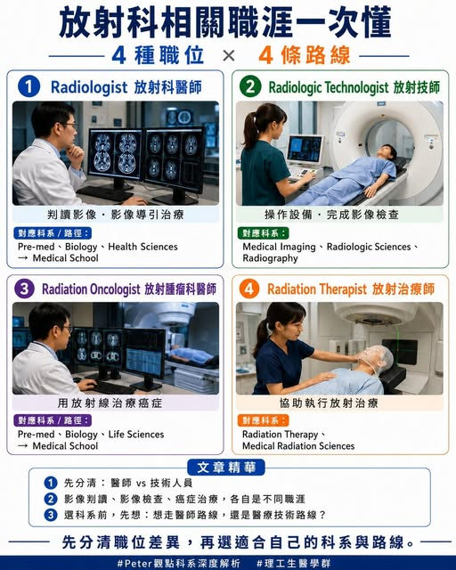

《看懂制度，選對世界》第一集
放射科到底在做什麼？4 個職業一次搞懂
最近一則美國 高薪職缺，引起很多討論。但留言區也出現一個有趣現象：很多人把 Radiologist、Radiologic Technologist、Radiation Oncologist、Radiation The…

【 到底在做什麼？4 個職業一次搞懂 】 最近一則美國 高薪職缺，引起很多討論。但留言區也出現一個有趣現象：很多人把 Radiologist、Radiologic Technologist、Radiation Oncologist、Radiation Therapist 全部混在一起。. 1 Radiologist 放射科醫師 這是醫師，通常是 MD 或 DO 背景。主要工作是判讀醫學影像，例如 X 光、超音波、CT、MRI、PET、核醫影像。
美國 Radiologist 常見兩條方向： Diagnostic Radiologist 以影像判讀為主，寫診斷報告。有些職位可以遠距工作，也可能做 CT 或超音波導引切片、引流等簡單處置。Interventional Radiologist 介入放射科醫師，透過影像導引進行微創治療，例如血管栓塞、取栓、導管治療、腫瘤介入治療等。. 2 Radiologic Technologist 放射技師 這是醫療技術人員，主要負責操作影像設備，協助病人完成檢查。常見方向包含： X 光、CT、MRI、乳房攝影、血管攝影等。
這類工作在美國也很熱門，屬於醫療影像第一線。依照檢查 modality，訓練時間與證照要求會有差異，有些走大學，有些走專門技術訓練。. 3 Radiation Oncologist 放射腫瘤科醫師 這也是醫師，屬於癌症治療團隊的一員。主要使用放射線治療癌症，例如肺癌、乳癌、直腸癌、攝護腺癌等。十多年前，這個科別因為收入佳、生活型態吸引人，曾經非常熱門。後來美國培訓名額增加，就業市場一度變得比較擠。近年隨著精準治療、質子治療、影像導引治療，以及部分非癌症治療應用發展，這個領域仍有值得觀察的潛力。
. 4 Radiation Therapist 放射治療師 這是協助放射腫瘤科醫師執行治療的技術人員。工作內容可能包含病人擺位、治療定位、操作放射治療設備、確認每次治療流程與安全條件。. 高中生選科系前，先問自己這 3 題 你想走醫師路線，還是醫療技術路線？如果目標是 Radiologist 或 Radiation Oncologist，代表你要走醫學院、住院醫師訓練、專科培訓。你喜歡影像分析，還是喜歡臨床治療？喜歡讀片、判斷病灶、分析醫學影像，可以研究 Radiology。
喜歡癌症治療、長期病人照護、治療計畫，可以研究 Radiation Oncology。你想較快進入職場，還是願意投入更長訓練？Medical Imaging、Radiologic Sciences、Radiography、Radiation Therapy 這類科系，偏向職業導向，適合想進入醫療影像、醫院技術部門、癌症中心的學生。
. 相關科系可以搜尋這些名稱 Medical Imaging Radiologic Sciences Radiography Diagnostic Imaging Medical Radiation Sciences Radiation Therapy Biomedical Imaging Health Sciences Allied Health Clinical Technology